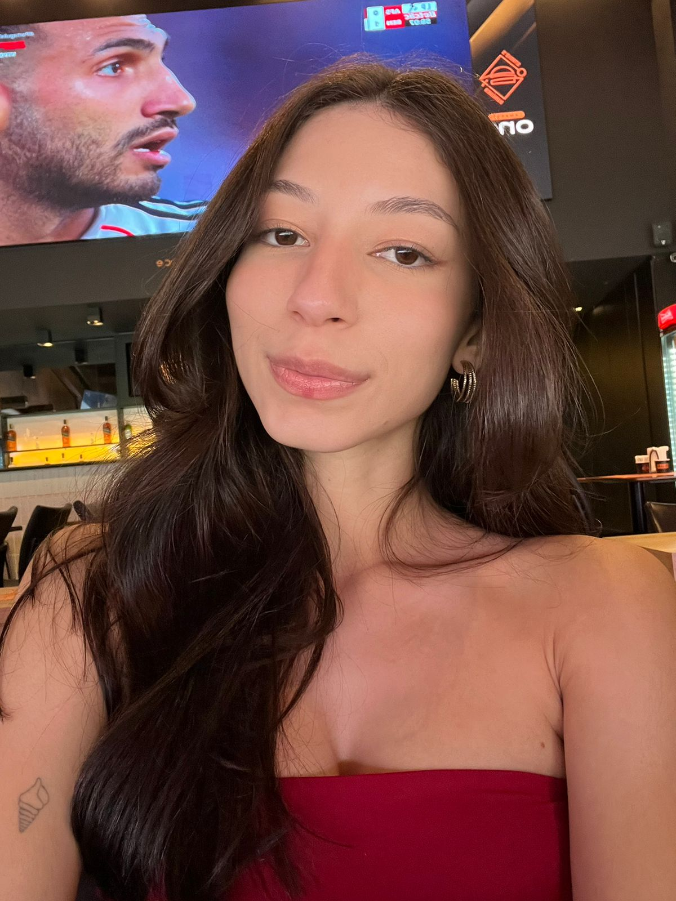
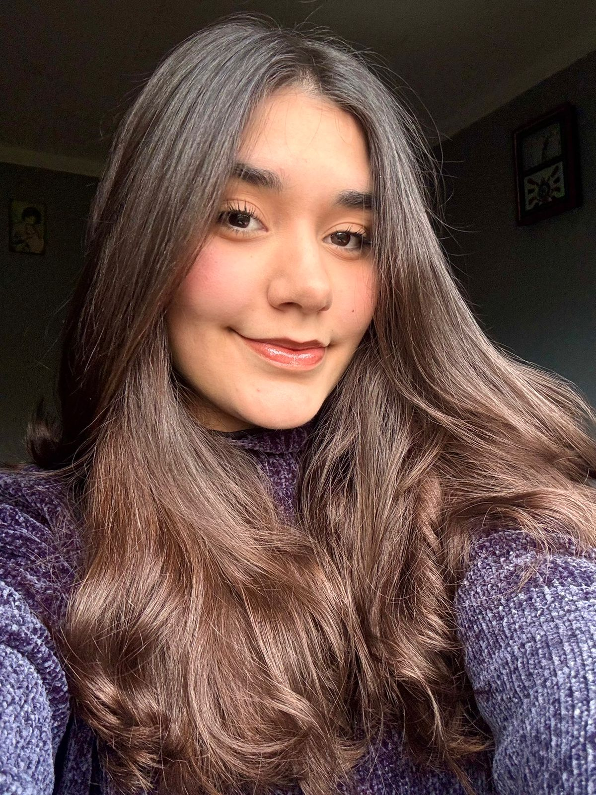
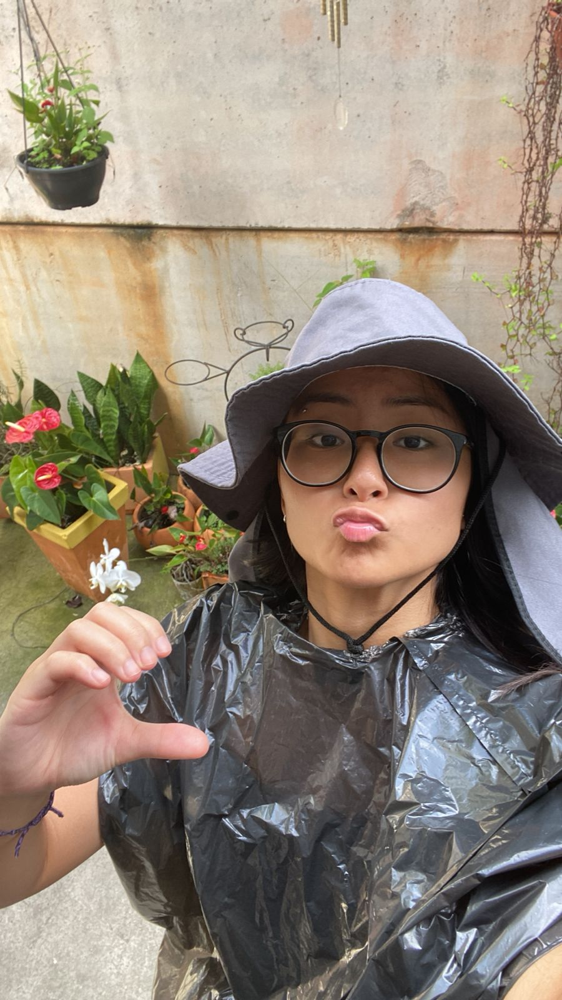

Nossa equipe:
GIOVANNA DIAS
A estrategista analítica que gerencia com precisão as finanças e a logística para garantir o sucesso do negócio.
MARIA LAURA DRUZEIC
A especialista estudiosa que une o profundo conhecimento sobre vinhos com a busca por inovação tecnológica.
MARIANNE MUKAI
A mente criativa e comunicativa, responsável pela curadoria dos vinhos e por encantar cada cliente.